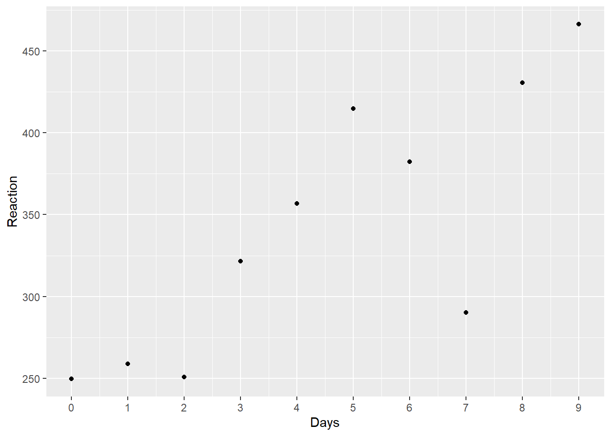
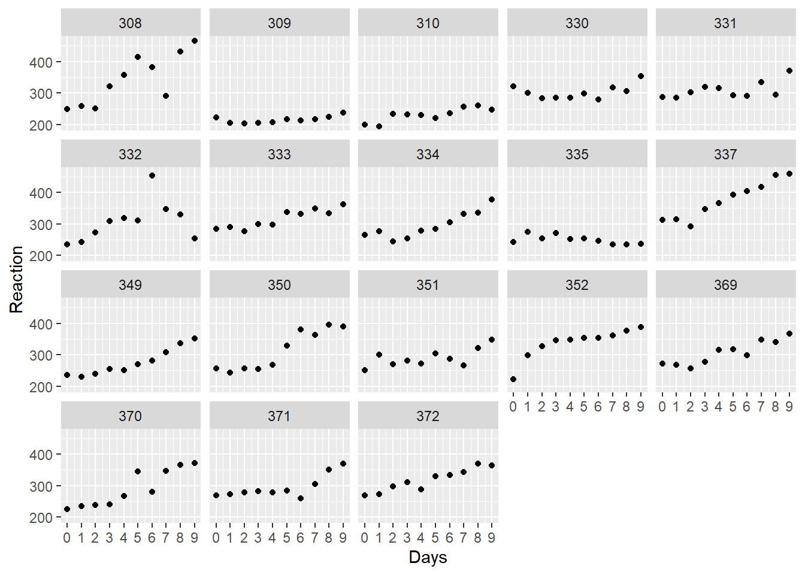
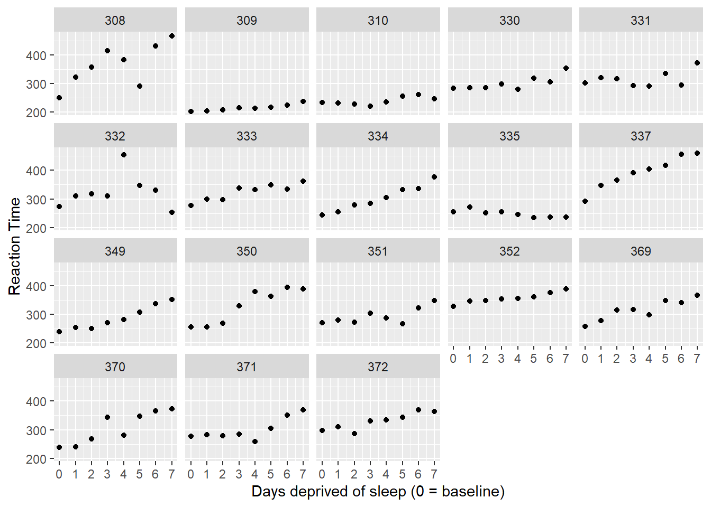
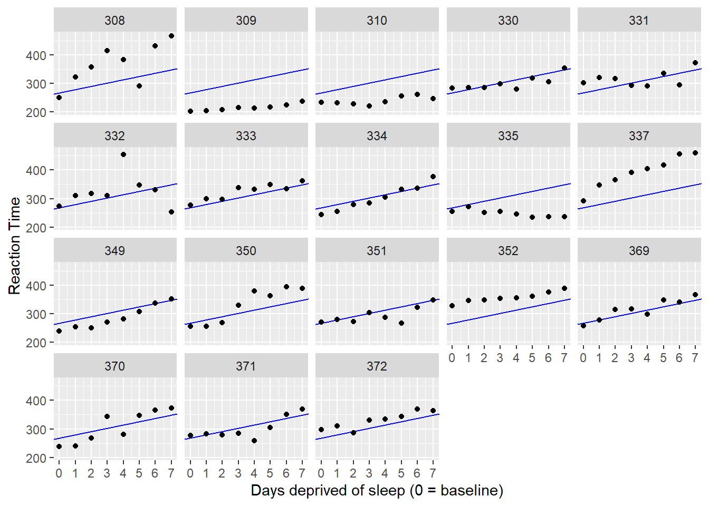
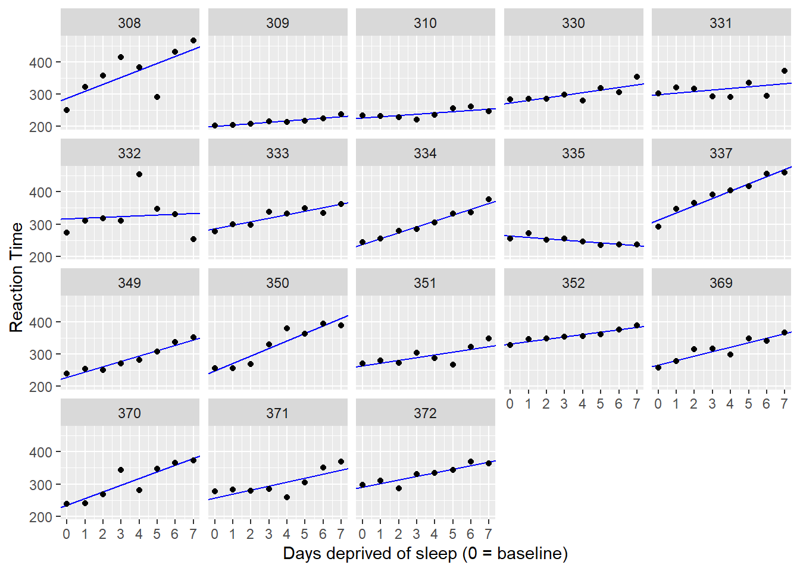

SleepStudy_CaseStudy
Load Library:
Know more about the data:
A good way to start every analysis is to plot the data. Here is data for a single subject (308).
Plot below, which shows data for all 18 subjects:

How to model these data?
Remove from the dataset observations where Days is coded 0 or 1, and then make a new variable days_deprived from the Days variable so that the sequence starts at day 2, with day 2 being re-coded as day 0, day 3 as day 1, day 4 as day 2, etc. This new variable now tracks the number of days of sleep deprivation. Store the new table as sleep2.
It is always a good idea to double check that the code works as intended. First, look at it:
Reaction Days Subject days_deprived
1 250.8006 2 308 0
2 321.4398 3 308 1
3 356.8519 4 308 2
4 414.6901 5 308 3
5 382.2038 6 308 4
6 290.1486 7 308 5And check that Days and days_deprived match up.
days_deprived Days n
1 0 2 18
2 1 3 18
3 2 4 18
4 3 5 18
5 4 6 18
6 5 7 18
7 6 8 18
8 7 9 18Now let’s re-plot the data looking at just these eight data points from Day 0 to Day 7.

We can apply 3 different approaches:
- complete pooling,
- no pooling, and
- partial pooling.
Complete pooling: One size fits all
The complete pooling approach is a “one-size-fits-all” model: it estimates a single intercept and slope for the entire dataset, ignoring the fact that different subjects might vary in their intercepts or slopes. If that sounds like a bad approach, it is.
Call:
lm(formula = Reaction ~ days_deprived, data = sleep2)
Residuals:
Min 1Q Median 3Q Max
-112.284 -26.732 2.143 27.734 140.453
Coefficients:
Estimate Std. Error t value Pr(>|t|)
(Intercept) 267.967 7.737 34.633 < 2e-16 ***
days_deprived 11.435 1.850 6.183 6.32e-09 ***
---
Signif. codes: 0 '***' 0.001 '**' 0.01 '*' 0.05 '.' 0.1 ' ' 1
Residual standard error: 50.85 on 142 degrees of freedom
Multiple R-squared: 0.2121, Adjusted R-squared: 0.2066
F-statistic: 38.23 on 1 and 142 DF, p-value: 6.316e-09According to this model, the predicted mean response time on Day 0 is about 268 milliseconds, with an increase of about 11 milliseconds per day of deprivation, on average. We can’t trust the standard errors for our regression coefficients, however, because we are assuming that all of the observations are independent (technically, that the residuals are). However, we can be pretty sure this is a bad assumption.
Let’s add the model predictions to the graph that we created above. We can use geom_abline() to do so
(Intercept) days_deprived
267.96742 11.43543 
The model fits the data badly. We need a different approach.
No pooling
Pooling all the information to get just one intercept and one slope estimate is inappropriate. Another approach would be to fit separate lines for each participant. This means that the estimates for each participant will be completely uninformed by the estimates for the other participants. In other words, we can separately estimate 18 individual intercept/slope pairs.
This model could be implemented in two ways: (1) by running separate regressions for each participant or (2) by running fixed-effects regression.
Running separate regressions for each participant
[1] TRUE
Call:
lm(formula = Reaction ~ days_deprived + Subject + days_deprived:Subject,
data = sleep2)
Residuals:
Min 1Q Median 3Q Max
-106.521 -8.541 1.143 8.889 128.545
Coefficients:
Estimate Std. Error t value Pr(>|t|)
(Intercept) 288.2175 16.4772 17.492 < 2e-16 ***
days_deprived 21.6905 3.9388 5.507 2.49e-07 ***
Subject309 -87.9262 23.3023 -3.773 0.000264 ***
Subject310 -62.2856 23.3023 -2.673 0.008685 **
Subject330 -14.9533 23.3023 -0.642 0.522422
Subject331 9.9658 23.3023 0.428 0.669740
Subject332 27.8157 23.3023 1.194 0.235215
Subject333 -2.7581 23.3023 -0.118 0.906000
Subject334 -50.2051 23.3023 -2.155 0.033422 *
Subject335 -25.3429 23.3023 -1.088 0.279207
Subject337 24.6143 23.3023 1.056 0.293187
Subject349 -59.2183 23.3023 -2.541 0.012464 *
Subject350 -40.2023 23.3023 -1.725 0.087343 .
Subject351 -24.2467 23.3023 -1.041 0.300419
Subject352 43.0655 23.3023 1.848 0.067321 .
Subject369 -21.5040 23.3023 -0.923 0.358154
Subject370 -53.3072 23.3023 -2.288 0.024107 *
Subject371 -30.4896 23.3023 -1.308 0.193504
Subject372 2.4772 23.3023 0.106 0.915535
days_deprived:Subject309 -17.3334 5.5703 -3.112 0.002380 **
days_deprived:Subject310 -17.7915 5.5703 -3.194 0.001839 **
days_deprived:Subject330 -13.6849 5.5703 -2.457 0.015613 *
days_deprived:Subject331 -16.8231 5.5703 -3.020 0.003154 **
days_deprived:Subject332 -19.2947 5.5703 -3.464 0.000765 ***
days_deprived:Subject333 -10.8151 5.5703 -1.942 0.054796 .
days_deprived:Subject334 -3.5745 5.5703 -0.642 0.522423
days_deprived:Subject335 -25.8995 5.5703 -4.650 9.47e-06 ***
days_deprived:Subject337 0.7518 5.5703 0.135 0.892895
days_deprived:Subject349 -5.2644 5.5703 -0.945 0.346731
days_deprived:Subject350 1.6007 5.5703 0.287 0.774382
days_deprived:Subject351 -13.1681 5.5703 -2.364 0.019867 *
days_deprived:Subject352 -14.4019 5.5703 -2.585 0.011057 *
days_deprived:Subject369 -7.8948 5.5703 -1.417 0.159273
days_deprived:Subject370 -1.0495 5.5703 -0.188 0.850912
days_deprived:Subject371 -9.3443 5.5703 -1.678 0.096334 .
days_deprived:Subject372 -10.6041 5.5703 -1.904 0.059613 .
---
Signif. codes: 0 '***' 0.001 '**' 0.01 '*' 0.05 '.' 0.1 ' ' 1
Residual standard error: 25.53 on 108 degrees of freedom
Multiple R-squared: 0.849, Adjusted R-squared: 0.8001
F-statistic: 17.35 on 35 and 108 DF, p-value: < 2.2e-16To get population estimates, we could introduce a second stage of analysis where we calculate means of the individual intercepts and slopes. Let’s use the model estimates to calculate the intercepts and slopes for each subject.
# A tibble: 18 × 3
Subject intercept slope
<fct> <dbl> <dbl>
1 308 288. 21.7
2 309 200. 4.36
3 310 226. 3.90
4 330 273. 8.01
5 331 298. 4.87
6 332 316. 2.40
7 333 285. 10.9
8 334 238. 18.1
9 335 263. -4.21
10 337 313. 22.4
11 349 229. 16.4
12 350 248. 23.3
13 351 264. 8.52
14 352 331. 7.29
15 369 267. 13.8
16 370 235. 20.6
17 371 258. 12.3
18 372 291. 11.1 Let’s see how well this model fits our data.

This is much better than the complete pooling model. If we want to test the null hypothesis that the fixed slope is zero, we could do using a one-sample test.
One Sample t-test
data: .
t = 6.1971, df = 17, p-value = 9.749e-06
alternative hypothesis: true mean is not equal to 0
95 percent confidence interval:
7.542244 15.328613
sample estimates:
mean of x
11.43543 This tells us that the mean slope of 11.435 is significantly different from zero, t(17) = 6.197, p<.001.
Partial pooling using mixed-effects models
Neither the complete or no-pooling approach is satisfactory. It would be desirable to improve our estimates for individual participants by taking advantage of what we know about the other participants. This will help us better distinguish signal from error for each participant and improve generalization to the population. As the web app below will show, this becomes particularly important when we have unbalanced or missing data.
Let’s fit the model, storing the result in object pp_mod.
Linear mixed model fit by REML. t-tests use Satterthwaite's method [
lmerModLmerTest]
Formula: Reaction ~ days_deprived + (days_deprived | Subject)
Data: sleep2
REML criterion at convergence: 1404.1
Scaled residuals:
Min 1Q Median 3Q Max
-4.0157 -0.3541 0.0069 0.4681 5.0732
Random effects:
Groups Name Variance Std.Dev. Corr
Subject (Intercept) 958.35 30.957
days_deprived 45.78 6.766 0.18
Residual 651.60 25.526
Number of obs: 144, groups: Subject, 18
Fixed effects:
Estimate Std. Error df t value Pr(>|t|)
(Intercept) 267.967 8.266 17.000 32.418 < 2e-16 ***
days_deprived 11.435 1.845 16.999 6.197 9.75e-06 ***
---
Signif. codes: 0 '***' 0.001 '**' 0.01 '*' 0.05 '.' 0.1 ' ' 1
Correlation of Fixed Effects:
(Intr)
days_deprvd -0.062